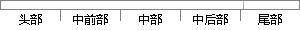

如果验证失败，则弹出提示信息。
片段位置图

相似结果|
相似片段 1：，系统弹出提示信息。正确填写后点击申报按钮，如果文件在传输过程中没有被截取，篡改或者替换等导致服务器端数字签名验证不通过，则系统返回申报成功提示，否则提示申报失败。税务局管理员帮助欢迎使用网上报税系统
相似片段 2：在选定服务之后紧接着对选中的服务进行验证，验证该服务是否处于运行状态、是否能够正常获取到该服务的描述文档，如果验证失败，则弹出聚合失败的提示信息，如果服务验证通过则继续下一步的操作。服务验证通过后
相似片段 3：来划定其能够使用哪些应用场景。考生注册的步骤为：首先，输入考生的身份证号，系统判断考生的身份证号是否已经存在，如果存在则弹出相应的提示信息，反之则继续输入考生姓名、邮箱地址等信息，最后提交给系统进行验证，如果验证成功则保存信息，反之则弹出验证失败的提示信息。
相似片段 4："，""）；}%>上述代码是人力资源管理系统登陆验证模块对登陆用户输入的用户名与密码进行登陆验证的过程，验证成功则成功登陆，验证失败则弹出相应的提示信息，让用户重新登陆。
相似片段 5：按钮成功进入系统（6） 用户名和密码一致性校验如果没有输入用户名或者密码，这是单击登录没有输入用户名、密码。弹出提示信息请重新输入用户名和密码。失败的登录56（7） 密码校验 用户只输入用户名，忘记
相似片段 6：对随机数信息进行验证，若验证成功，则通信双方弹出提示：本次ERTP密钥协商成功，双方确认后开始加密通话；若验证失败，则回调函数通过JNI接口向java上层报告验证失败消息，则弹出提示：加密验证失败，并挂断电话。
相似片段 7： Session获取用户名和密码不存在 存在失败次数>5?是否是 否管理员页面普通用户页面重置用户失败次数弹出提示信息图 5-8 用户验证流程5.3.6.2请求验证请求验证处理的主要功能是：接受用户对系统
相似片段 8：(2)对输入的手机号码进行验证，即是通过调用valNoO方法，如果返回True，则弹出提示设置成功的对话框，将设置信息保存到pushvideo．txt文件中，并且返回到视频库管理主界面，如果返回
相似片段 9：客户端认证通过提示Fig54Clientauthenticationsucc∞dprompt如果用户在“用户名”和“服务器地址”两个输入框中的任何个中填入了非法的信息之后，点击“连接”按钮，则将弹出
相似片段 10：注册，弹出提示用户输入的信息错误的对话框，并且返回注册界面。(3)如果上一步均返回一个非空值，再进行密码和确认密码的比对，即是调用valPassword0方法，如果返回False，弹出提示用户两次密码
|
※ 片段修改建议 ※
近似词参考：- 如果：若是 假如 要是
- 提示：提醒
系统自动生成语句：若是验证失败，则弹出提醒信息。
注：本片段修改建议为系统自动生成，仅供参考。